Analiza rješenja · JOI Spring Camp 2022 · Dan 3
Prskalica
O ovom članku
Tekst je prijevod službene japanske prezentacije rješenja, preoblikovan u članak. Slajdovi su ugrađeni kao slike; natpis pod svakim slajdom je prijevod teksta na njemu. Dijelovi označeni kao trenerska napomena nisu u izvornoj prezentaciji — dodani su da popune korake koje slajdovi preskaču ili samo skiciraju.
Slajdovi
Zadatak i podzadaci
izvorni slajdovi 1–3
-
1Naslovni slajd: Sprinkler; analiza: tatyam. -
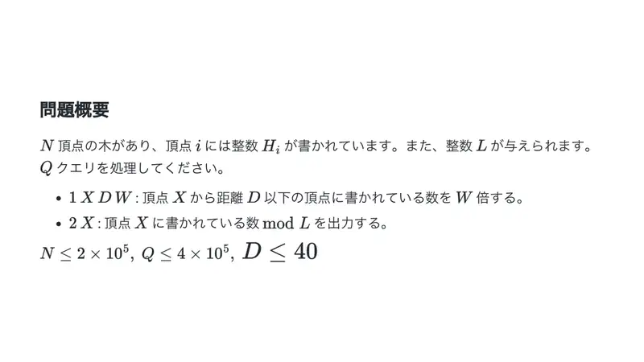
2Sažetak. Stablo s brojevima na čvorovima; upit 1: čvorove na udaljenosti $\le D$ od $X$ pomnoži s $W$ (mod $L$); upit 2: ispiši broj. -
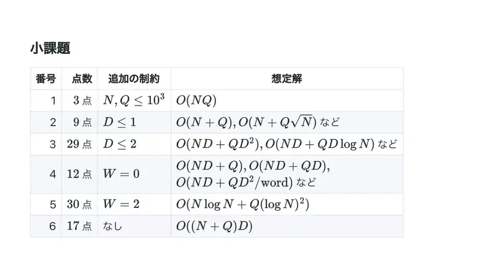
3Tablica podzadataka i očekivanih složenosti.
← → tipke ili klik na sliku
Podzadaci 1–3 41 bod
Koraci algoritma
Razdijeli gore, skupi dolje
izvorni slajdovi 4–10
-
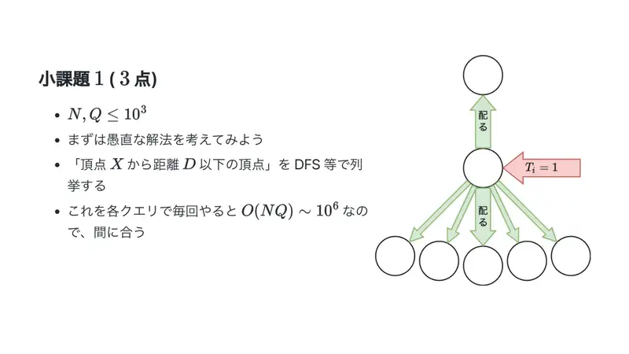
4Podzadatak 1: DFS-om nabroji okolinu za svaki upit — $O(NQ)$. -
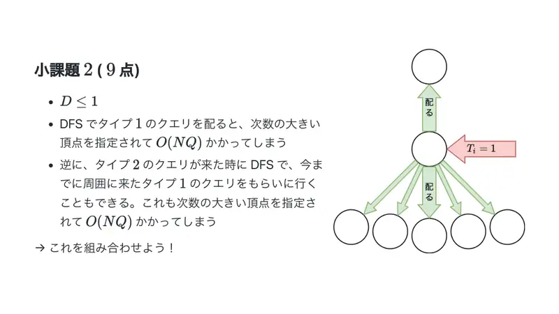
5Podzadatak 2 ($D \le 1$): dijeljenje susjedima košta koliko i stupanj; skupljanje od susjeda pri upitu 2 isto. Kombiniraj! -
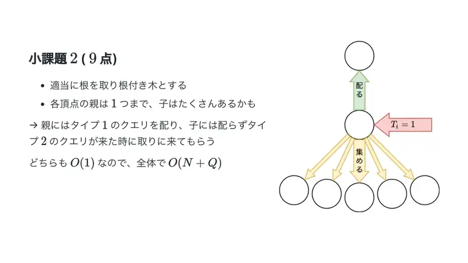
6Ukorijeni: jedan roditelj, mnogo djece. Roditelju razdijeli, od djece se skuplja pri upitu 2 — $O(1)$ po upitu, ukupno $O(N + Q)$. -
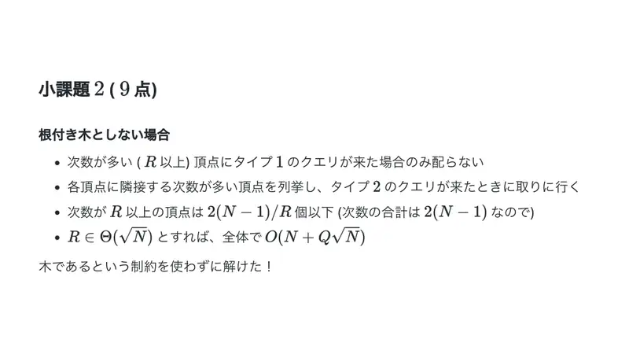
7Bez ukorjenjivanja: samo čvorovi velikog stupnja ne dijele; svaki čvor pamti susjede velikog stupnja i od njih skuplja. Čvorova stupnja $\ge \sqrt Q$ je $O(N/\sqrt Q)$ — radi i bez stabla. -
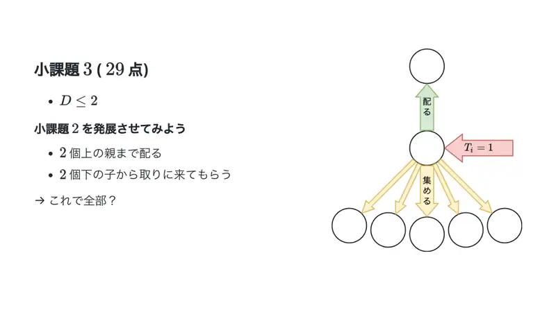
8Podzadatak 3 ($D \le 2$): dijeli do 2 pretka, skupljaj od 2 razine potomaka — je li to sve? -
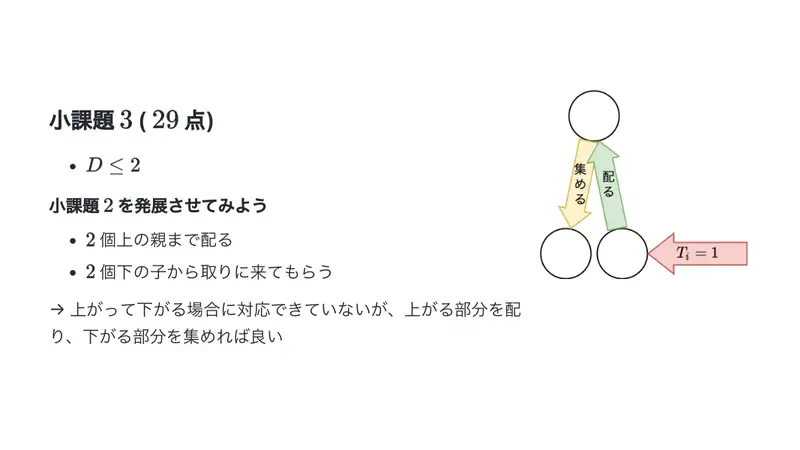
9Ne pokriva put „gore pa dolje”; ali dio gore razdijeli, dio dolje skupi. -
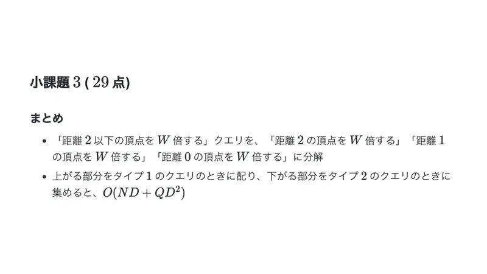
10Sažetak: rastavi „$\le 2$” na točne udaljenosti $2, 1, 0$; uspon razdijeli pri upitu 1, silazak skupi pri upitu 2: $O(ND + QD^2)$.
← → tipke ili klik na sliku
Podzadaci 4–5 42 boda
Koraci algoritma
W = 0 i W = 2
izvorni slajdovi 11–17
-
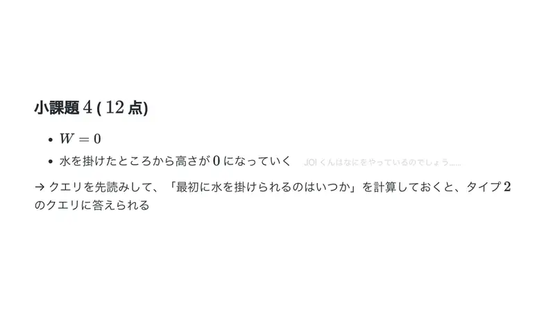
11$W = 0$: zalivene biljke postaju 0 zauvijek — dovoljno je znati kad je čvor prvi put zaliven (offline). -
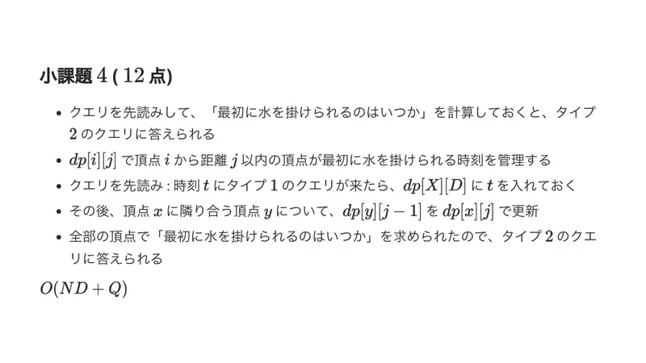
12Za svaki čvor i $d \le 40$ drži najranije vrijeme zalijevanja okoline; širi susjedima s $d-1$. Zatim odgovaraj upitima 2. -
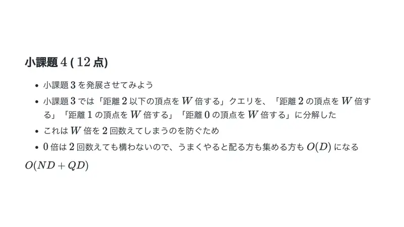
13Alternativno: kod $W = 0$ dvostruko brojanje ne smeta, pa i dijeljenje i skupljanje mogu biti $O(D)$. -
14Za čvor $v$ i $d$: je li „podstablo $v$ do dubine $d$” zaliveno. Uspon: $k$-ti predak dobije bit $D-k$. Skupljanje: treba pogledati bitove $\ge i$ — bitovne operacije, $O(1)$. -
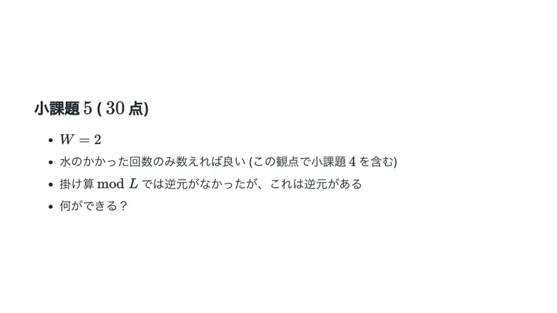
15$W = 2$: dovoljno brojati zalijevanja (uključuje podzadatak 4). Množenje mod $L$ nema inverz, brojanje ima — što to omogućuje? -
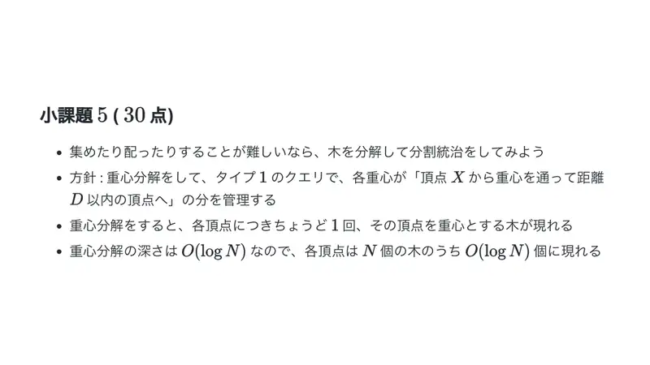
16Ako je dijeljenje/skupljanje teško — podijeli stablo: centroidna dekompozicija; svaki čvor je u $O(\log N)$ komponenti. -
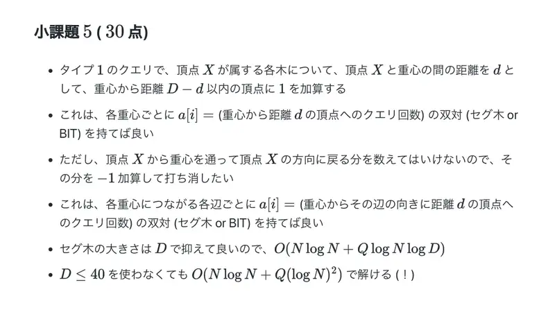
17Upit 1: za svaku komponentu s centroidom $c$ i $d = \mathrm{dist}(X,c)$ dodaj 1 čvorovima na udaljenosti $\le D - d$ od $c$ (BIT po udaljenosti); poništi povratak prema $X$ BIT-om po smjeru brida. BIT veličine $\le 41$ — čak i bez $\log$: $O((N+Q)\log N)$.
← → tipke ili klik na sliku
Puni bodovi 17 bodova
Koraci algoritma
Točna particija okoline
izvorni slajdovi 18–20
-
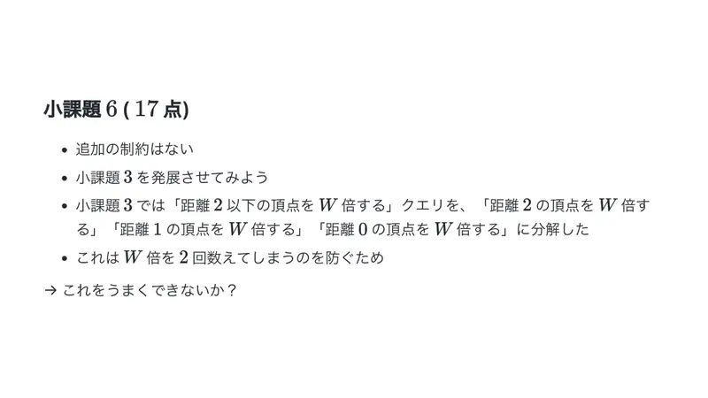
18Kod $D \le 2$ rastavili smo na točne udaljenosti da $W$ ne brojimo dvaput. Može li pametnije? -
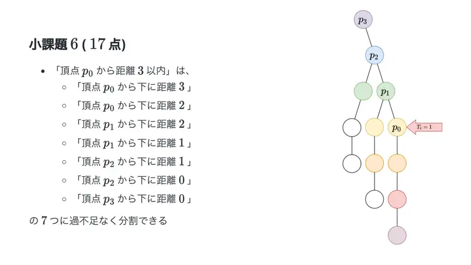
19„Udaljenost $\le 3$ od $p_0$” = $R(p_0,3) \cup R(p_0,2) \cup R(p_1,2) \cup R(p_1,1) \cup R(p_2,1) \cup R(p_2,0) \cup R(p_3,0)$ — 7 regija „od $p_i$ dolje točno $j$”, bez preklapanja i praznina. -
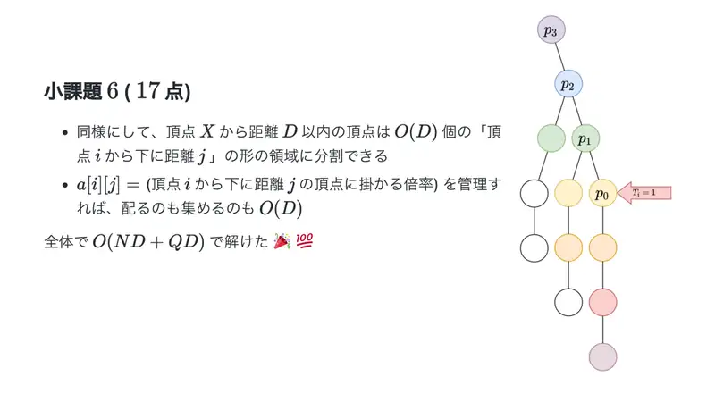
20Općenito $O(D)$ regija; $a[i][j]$ = koeficijent regije „od $i$ dolje $j$”. Dijeljenje i skupljanje u $O(D)$: ukupno $O(ND + QD)$ — 100.
← → tipke ili klik na sliku
Slajdovi
Dodaci i bodovi
izvorni slajdovi 21–23
-
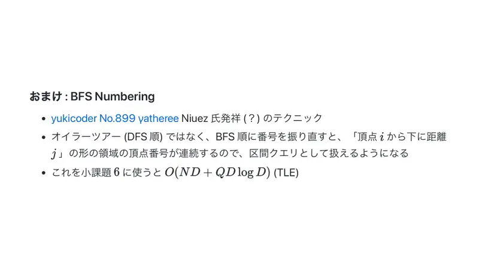
21Dodatak: BFS-numeracija — čvorovi „od $v$ dolje $j$” dobivaju uzastopne brojeve, pa se regije obrađuju intervalno (za podzadatak 3 daje TLE). -
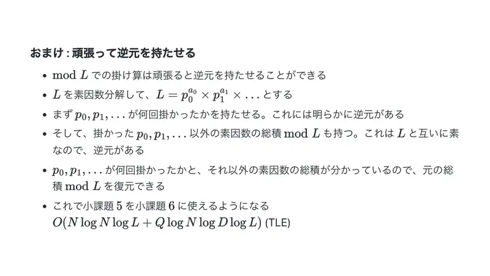
22Dodatak: inverz množenja mod $L$ — rastavi $L$ na proste faktore, prati eksponente tih prostih i umnožak ostatka (relativno prost s $L$, invertibilan); rekonstruiraj umnožak. Omogućuje pristup podzadatka 5 za opći $W$ (TLE). -
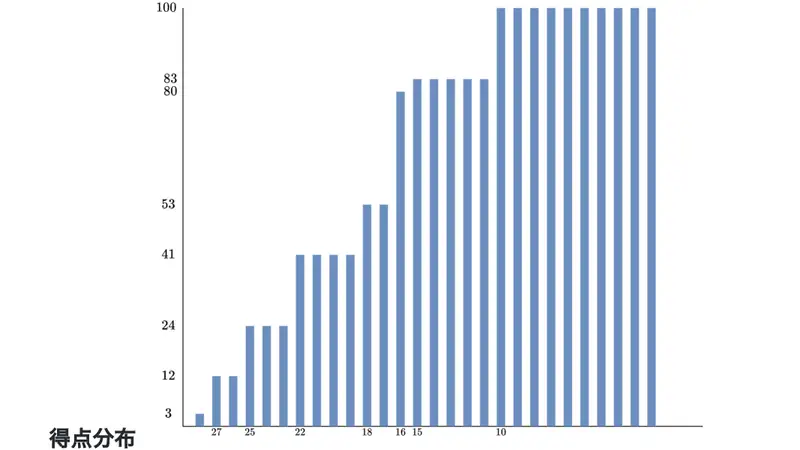
23Raspodjela bodova.
← → tipke ili klik na sliku
Sažetak
- Množenje mod $L$ nema inverz → okolinu treba particionirati disjunktno.
- Okolina radijusa $D$ = $2D+1$ regija $R(p_i, D-i)$, $R(p_i, D-i-1)$ po precima $p_i$.
- $a[v][j]$ za $j \le 40$: upiti u $O(D)$, ukupno $O((N+Q)D)$.